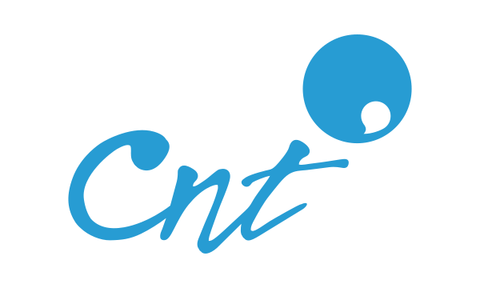
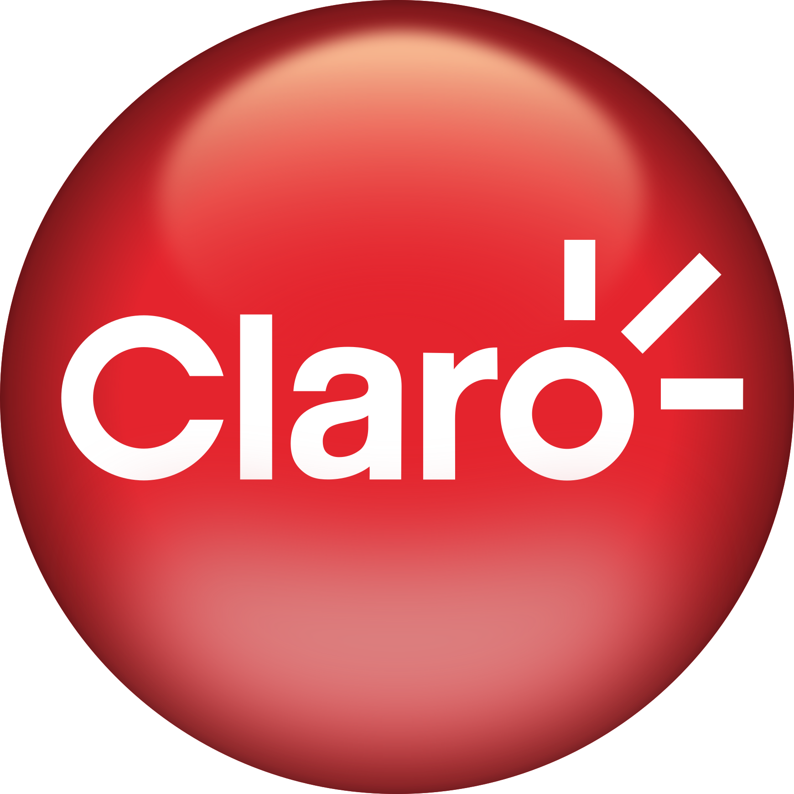
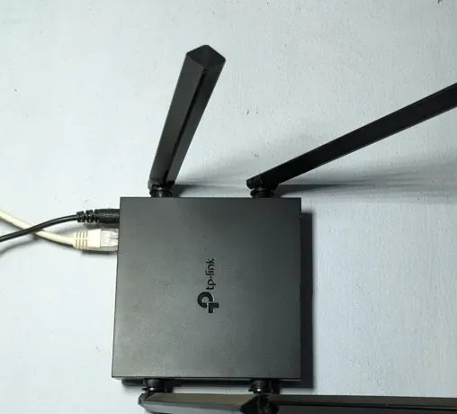
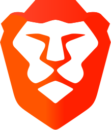
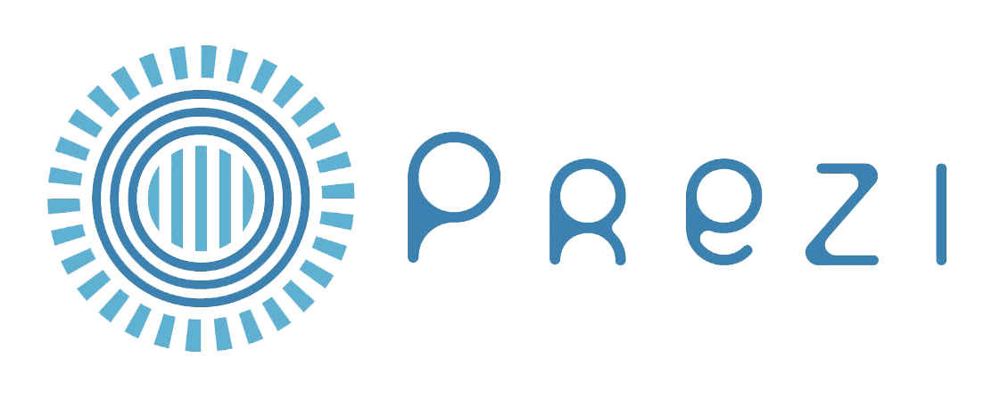
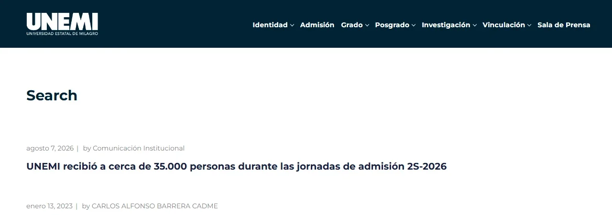
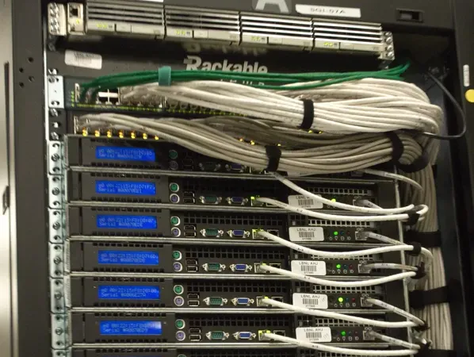
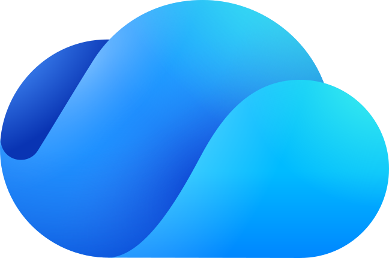

Cinco características y cinco elementos para conectarse
Características de internet
| Global | conecta usuarios y dispositivos de todo el mundo, sin barreras geográficas |
| Interconectado | está formado por múltiples redes conectadas entre sí, que intercambian información sin parar |
| Accesible | da acceso a información y recursos desde diversos dispositivos, siempre que haya conexión |
| Dinámico | la información se actualiza constantemente, con contenidos recientes y en permanente evolución |
| Basado en protocolos | funciona con normas estandarizadas, como TCP/IP, que garantizan el envío y la recepción de datos |
¿Qué se necesita para conectarse a internet?






Redes sociales
Qué son
Plataformas digitales formadas por comunidades de individuos con intereses, actividades o relaciones en común, como amistad, parentesco o trabajo. Permiten el contacto directo entre personas y son un canal inmediato para comunicarse e intercambiar información.
Horizontales o genéricas
No tienen una temática determinada. Apuntan a todo tipo de usuarios.

Verticales
Relacionan personas con intereses específicos en común, como música, pasatiempos o deportes.


Sirven para comunicar y compartir, informarse, vender o comprar, mantener o establecer contacto y entretenerse.
Ventajas. Son inmediatas y masivas, acortan distancias, dan visibilidad a las marcas, son canal de aprendizaje y de entretenimiento, permiten compartir información y brindan oportunidades laborales.
Desventajas. Grooming, noticias falsas (fake news), viralización de información, ciberacoso, acceso indiscriminado a contenidos y abuso en el uso de las redes.
Mensajería instantánea
Qué es
Comunicación entre dos o más personas mediante el intercambio de mensajes de texto, casi en tiempo real, a través de una aplicación. Casi todas permiten también mensajes de voz, llamadas y videollamadas, por lo general gratis.


Ventajas
No tiene costo adicional, comunica en tiempo real con cualquier persona del mundo, permite campañas de marketing dirigidas, permite grupos y ayuda a organizar tareas entre trabajadores.
Desventajas
No permite hablar con quien no tiene la misma aplicación, las conversaciones no son del todo seguras, genera estrés por las respuestas inmediatas, deforma el lenguaje y es común el plagio de identidad.
Dos tipos de buscadores
Buscador especializado
También se llama buscador vertical. Se especializa en un sector concreto de usuarios y da información más exacta y profunda sobre temas específicos.


Buscador interno
Lo tienen algunos sitios web para buscar dentro de su propia página. Encuentra información en un ámbito restringido.
También ayuda a conocer cómo consultan los usuarios.

Google Académico
Es la versión en español de Google Scholar, el buscador de Google especializado en documentos académicos y científicos. Ordena los resultados por relevancia y muestra primero los que más podrían interesar.
En la nube, la información vive en servidores

La nube, según Ángel Gutiérrez (2018)
Acceso a servicios y recursos informáticos mediante una red de servidores distribuidos, que actúan como una unidad accesible remotamente, permitiendo almacenar y utilizar información sin depender de una infraestructura local.
Ventajas de la nube
Acceso desde cualquier lugar y dispositivo. Es escalable, se compra espacio según la necesidad. Muchas son gratis. Se comparte con otros. Mejora la seguridad. Todo queda en un mismo lugar.
Desventajas del disco duro
Tiene límite de capacidad. Ocupa espacio en el computador. Es vulnerable a virus. Limita la memoria y vuelve lento al computador. El disco interno y el externo pueden fallar.
Ejemplos de almacenamiento en la nube
| Herramienta | Para qué sirve | Gratis |
|---|---|---|
| Dropbox | guarda archivos desde el computador y los abre desde cualquier smartphone, porque sincroniza todos los dispositivos | 2 GB |
 OneDrive | viene incluido con una cuenta de Hotmail o Microsoft y preinstalado en computadores con Windows | 5 GB |
 Google Drive Google Drive | guarda archivos para editarlos con sus herramientas en línea, y es compatible con Office | 15 GB |
| iCloud | la herramienta de Apple para gestionar archivos en línea | 5 GB |
Cómo es una plataforma educativa por dentro
Cuatro características
Seis tipos de herramientas
| Administrativas | el centro gestiona matrículas, informes y certificados |
| Data y analítica | el docente hace un seguimiento minucioso de cada grupo o alumno |
| Gamificativas | crean contenidos o actividades con un enfoque lúdico |
| Evaluativas | evalúan con test, exámenes e incluso supervisión en línea (proctoring) |
| Sociales y de comunicación | cooperación, trabajo en grupos, mensajería, chats, foros y avisos |
| Didácticas | materiales que simplifican crear contenido educativo, lecciones y actividades |
Tipos de plataformas, con ejemplos
| En línea | Edmodo, Google Classroom, WizIQ, Udemy, Schoology |
| Software comercial | Blackboard, Skillsoft, Cátedra, Saba, Educativa |
| Software de código abierto | Moodle, Claroline, Chamilo, Dokeos, Sakai |